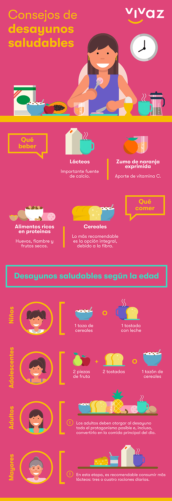

Lácteos: importante fuente de calcio y, en combinación con el café, activan a cualquiera desde primera hora del día.
Zumo de naranja exprimida: al importante aporte de vitamina C, hay que añadir sus propiedades para prevenir el colesterol o la aparición de piedras en el riñón. Las piezas de fruta entera son un buen sustituto, no así los zumos procesados, por contener demasiado azúcar.
Cereales: la opción es elegir entre pan, tostadas o cereales. Lo más recomendable son las opciones integrales debido a su aporte de fibra. Sí que lo que se debe eliminar es la bollería industrial al contener grandes cantidades de azúcar y grasas saturadas.
Alimentos ricos en proteínas: el huevo es una gran fuente de proteínas, pero consumirlo a diario puede causar desequilibrios en el organismo. Por ello, es recomendable alternarlo con fiambres bajos en grasas, como pavo, jamón york o jamón serrano, y frutos secos en poca cantidad, por su alto contenido calórico.
Niños: El Centro de Investigación e Información Nutricionales de Francia CERIN establece que es suficiente el consumo de una taza de cereales o una tostada junto a leche.
Adolescencia: lA esta edad, aumentan las necesidades energéticas, por lo que conviene tomar dos tostadas, o un tazón de cereales, y dos piezas de fruta.
Adultos: Influye bastante el grado de actividad, el peso y las posibles enfermedades, pero siempre debe otorgarse al desayuno todo le protagonismo posible e incluso convertirlo en la comida principal del día, ya que esta actitud reduce el apetito y la ansiedad.
Personas mayores: En esta etapa de la vida es habitual la aparición de enfermedades óseas, por lo que es recomendable consumir más lácteos, según la OMS, tres o cuatro raciones diarias.
Dar el 100% en el trabajo o la escuela es mucho más fácil si empezamos el día con desayunos saludables, así que ¡sigue estos consejos y empieza el día con energía!
